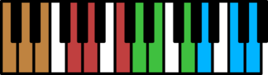
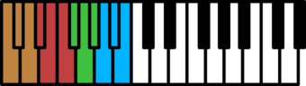
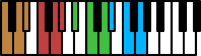
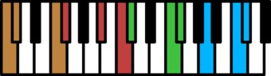
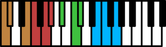
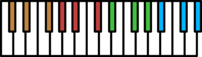

What is this?
Shawzinscore is a utility for viewing, playing and editing Warframe Shawzin song codes.
On the left is a reproduction of the in-game Shawzin screen, with the controls set to your choice of control schemes. On the right is a piano-roll style display showing the corresponding musical notes for the chosen scale and Shawzin.
You can view the song in a couple of ways, and play the audio with the Shawzin of your choice.
A Library is coming NOT SOON™. Here, have some songs in the meantime:
- Gerudo Valley
- Lost Woods theme
- Song of Storms
- BEST SONG EVER
- Dark Necessities
- Pachelbel's Canon
- Megalovania
- OTHER BEST SONG EVER
- Flight of the Bumblebee
Table of Contents
- Getting Started
- Basic Properties
- The Track Area
- Playback
- Sharing
- Settings
- Edit Mode
- General Info
- Q & A
- Update Notes
- To do
- Known Issues
- Thanks
Getting Started
Copy a Shawzin song code from anywhere and paste into Shawzinscore, either by pasting directly into the Song Code text box or by using the paste button.
If you've come to Shawzinscore via a link, then you can copy the Shawzin song code from the Song Code text box or by using the copy button. I would recommend using the copy button, because there are special characters in song codes that sometimes make it hard to select the whole thing.
Song Codes
Song codes are a text format for storing and sharing Shawzin songs. I'm not going to get into technical details here, but song codes are limited to a maximum of 1000 notes and a maximum of four minutes.
The actual format includes the characters 0-9, A-Z, a-z, +, and /, so it should be safe to copy and paste pretty much anywhere just like normal text.
Basic Properties
Under the song code are four basic properties.
Title
This is the title given to the song. It's not part of the song code, but it does get saved to any Shawzinscore links.
Shawzin
Under the Title is a Shawzin selector. Click here to change the currently active Shawzin. There are currently ten Shawzins to choose from.
The Shawzin section is not part of the song code, but it does get saved to any Shawzinscore links.
Scale
Under the Shawzin selector is the Scale selector. Click here to change the scale the song is using. There are nine scales to choose from.
The scale selection is saved as part of the song code.
Control Scheme
Finally, under the Scale selector is a Control Scheme selector. Use this to change the controls displayed in the tablature side of the track area. There are currently eight stock control schemes available.
Custom Control Schemes
In addition to the eight stock control schemes, you can specify your own custom control scheme
Note: Custom control schemes are only supported for console controllers. I'm not making a bajillion icons for all the PC buttons and y'all can just use song codes anyway.
Adding a Custom Control Scheme
Click the Add custom button to bring up the Custom Control Scheme dialog.
In the dropdown in the upper left, select from Playstation, XBox, or Nintendo Switch. This will determine the controller layout displayed.
Beside the layout dropdown is a Name text box where you can give the control scheme a name.
Each control in the layout is either assigned to one of six functions, the three frets and three strings, or is unassigned and labelled N/A. Click on the label beside any control to reassign it. There are always exactly six controls assigned, with the rest being N/A.
- Clicking on an unassigned control and assigning a function to it will unassign that function from where it was previously assigned.
- Clicking on an already assigned control and reassigning it to a new function will swap its function with wherever the selected function was assigned before.
Click Save to save the control scheme and use it.
Click Cancel to cancel the dialog and return to the control scheme selection menu.
Loading a Custom Control Scheme
Adding a custom control scheme will add it to the control scheme selection menu. You can add multiple custom control schemes to choose from.
Clicking an existing custom control scheme will open the custom control scheme dialog again. This gives you a chance to view, edit, or delete the control scheme before using it.
Click Okay to save any changes to the control scheme and use it.
Click Cancel to cancel any changes and return to the control scheme selection menu.
Click Delete to delete the custom control scheme from the control scheme selection menu. Note that if you currently have that control scheme selected then it will still be your configured control scheme until you select or add another one.
Note: If you want to duplicate a custom control scheme, then first select it. Then open the control scheme menu again and select Add custom. The add custom control scheme dialog uses your currently selected control scheme as a template.
Note: Your control scheme selection and any custom control schemes you've created are stored in your browser's local storage as preferences. They will persist across browser sessions on any song you work with in Shawzinscore.
The Track Area
Once loaded, the song code is decoded and displayed in the track area. This area is divided into two side-by-side sections.
The Tablature Side
The left side of the track area shows a recreation of the in-game Shawzin screen.
The Piano Roll Side
The right side of the track shows an equivalent musical tone for every Shawzin note on the left. This is a piano-roll display with each tone appearing as a bar in line with a particular piano key.
The piano roll tones are color-coded by fret:
- (no fret)
- Sky Fret
- Earth Fret
- Water Fret
- Chord Frets: Sky Fret + Earth Fret
- Chord Frets: Earth Fret + Water Fret
- Chord Frets: Sky Fret + Water Fret
- Chord Frets: Sky Fret + Earth Fret + Water Fret
The length of the tones in the piano roll side are dependent on which Shawzin is selected. Some Shawzins have sharp, plucked sounds, which will appear as short bars in the piano roll side. Others have longer, sustained sounds, and the bars in the piano roll will be roughly accurate to how long those tones last. If a Shawzin is monophonic, then tone bars can cut off at the beginning of the next note.
Strings/Frets
Above/below the Tablature side is a display for the String controls. This is replaced by Fret controls when Edit Mode is enabled.
Note: This section doesn't really do anything right now, but it's going to eventually be part of how editing works.
The Keyboard
Above/below the Piano Roll side is a piano keyboard. The available notes for the currently selected scale will be highlighted on the keyboard. Clicking on a highlighted key will play that tone.
Chord Modes
By default the piano keyboard allows you to play single notes. To the left of the keyboard are buttons for switching between various chord modes. The selected chord mode is highlighted with a white outline.
The available buttons change depending on the current Shawzin and scale combination.
-
 Normal: No chord mode selected, normal single notes are played.
Normal: No chord mode selected, normal single notes are played.
- Dual Chord Sets: Most Shawzin and scale combinations have two sets of chords, each set rooted mostly on the first six notes of the scale. Mostly.
- Single Chord Set: The Chromatic scale on most Shawzins has a single run of 12 chords instead of two sets of 6.
- Slap: For every scale on the Tiamat Shawzin, the chords are just slap-bass equivalants of the normal notes.
Direction
By default the notes in the track area are displayed from bottom to top, to mirror the direction notes are shown in the in-game Shawzin screen. Click the button underneath the Tablature area to switch this direction to top-down. This will also move the Fret/String and Keyboard sections so they are above the track. Click to flip the direction back to bottom-up.
While bottom-up is how the Shawzin screen is laid out in-game, top-down makes more sense to my brain when I'm reading or editing music. Playback and everything else will work in either direction.
Playback
Click the button or press the Space Bar to start playback. Like the in-game Shawzin screen, the song doesn't start immediately. There will be some lead time while the first notes scroll in.
While the song is playing, click the button or press the Space Bar to pause playback. If you start playback again then it will start from where it left off.
Click the button while playing or paused to stop playback completely. If you start playback again then it will restart from the beginning.
Click the button to rewind the view back to the beginning of the song. If it's currently playing then playback will restart from the beginning.
Click the button to fast forward the view to the end of the song. If it's currently playing then playback will stop.
Playback Start
By default, a fresh playback starts about two seconds before the beginning of the song. Click anywhere on the background of the tablature or piano roll sides to set a Playback Start Marker. When you start a new playback, or stop and restart playback, then it will start at this marker instead of at the beginning.
Using the button to rewind the song also clears the playback start marker.
Note: You can't place a playback start marker or change the playback location while the song is playing.
Playback Speed
Use the slider next to the playback buttons to adjust the playback speed. The speed can be set anywhere from 0.25x to 2x.
The slider will snap to 0.25x, 0.5x, 1x, 1.5x, and 2x, but it can be also placed in between any of those values. If you really have to get a specific value then hold Shift to disable snapping.
You can also edit the text box to the right of the slider and enter a speed multiplier manually. You can enter up to 10x speed in here, because it's funny.
Note: Your current playback speed is stored in your browser's local storage as a preference. It will persist across browser sessions on any song you work with in Shawzinscore.
Note: You can adjust the speed while the song is playing, but it's still a little wonky. You might hear some notes sounding weird as they get double-played. It's just the nature of trying to play sounds accurately in a browser.
Metronome
Click the Metronome button to turn the metronome on. Click again to turn it off.
While the metronome is on, Shawzinscore will play an audible click on each beat and measure marker to mark the time.
Note: The metronome is only enabled if you have a Meter and Tempo configured (see Song Configuration).
Volume
Click the Volume button to bring up the volume controls. There are two volume sliders, one for the Shawzin and one for the Metronome.
You can set the volume on each anywhere from 0% to 200%. The mark in the middle of the slider is 100%.
Note: Volume settings are stored in your browser's local storage as preferences.
Sharing
The browser's Location Bar is kept up to date, so if you want you can just copy or bookmark that. There are two other options for sharing:
Generate Link
Click the button to bring up a text box containing a full Shawzinscore link to your song code and other properties. You can copy directly from the text box or click the button to copy it to your clipboard.
Shawzin Tab
Click the button to bring up the Shawzin Tab. This is basically a port of my original Shawzin app.
The layout is closer to a standard guitar tablature format. The music direction goes from left to right across the page, with a line for each string. Each note is represented by a grouping of fret controls centered on a string. Frets that aren't pressed are represented as a small circle.
The controls displayed are determined by your selected control scheme
Download
Click the Download button to generate a PNG image of the Shawzin Tab contents. It will pop up a link to the image file.
Seconds per line/Measures per line
If you have measures and a tempo specified (see Song Configuration) then this field will be Measures per line. Otherwise it will be Seconds per line.
Use this to determine how many seconds or measures are put on each line of the Shawzin Tab. You may need to adjust this down for faster-paced songs so the notes are spread out more. Alternatively, adjust it up for very slow songs to make the image smaller. You want the Shawin tab for your song to be easily readable.
If you make adjustments to Seconds per line/Measures per line then it will be saved to you URL and Shawzinscore link, if you generate one. It's tied to the song, similar to Title, Meter, and other properties.
Dark Mode
By default the Shawzin Tab is generated as black on a white background. You can enable Dark Mode to generate it as white on a black background instead.
Note: Your Dark Mode setting is stored in your browser's local storage as a preference.
Old Mode
When I first put out Shawzin Tab it just displayed numbers for the strings and frets. I removed this briefly when I updated Shawzin Tab to support control schemes, and got some complaints from people who liked the numeric format. So it's still here, you can enable it with the Old Mode setting.
To avoid confusion, chords in Old Mode are shown with multiple fret numbers and an underline underneath them to group them together as a chord.
Note: Your Old Mode setting is stored in your browser's local storage as a preference.
Settings
Click on the Settings button to bring up the settings menu.
- Flipped Direction: Use this to toggle the direction of the song display. This has the same effect as the and buttons.
- Old Fret Layout: This reverts the note display to the old layout, where the fret controls were displayed in a line above the string control instead of in a triangle underneath it.
Note: Your settings are stored in your browser's local storage as a preference.
Edit Mode
Click the Edit Mode button to enable edit mode. This allows you to edit individual notes in the song, and opens a number of editing tools.
Click the button again to exit edit mode.
Note Editing
When edit mode is enabled, both sides of the Track Area will show individual tick marks. These show the minimum time resolution of the Shawzin song sode format, 16 ticks per second. A note must start on one of those tick marks.
Only one side of the track area is active for editing at a time. This is determined by the Fret Controls on the tablature side.
- Clicking on an empty section of the active side will place a note.
- Clicking on an empty section of the inactive side will place the Playback Start Marker, like it does outside of edit mode.
- Clicking and dragging on a note on either the active or inactive side will move that note.
Tablature Side
By default, the tablature side is not active for placing new notes until one or more of the Fret Controls are enabled. You can still click and drag tablature side notes at any time.
Note: Clicking and dragging a note on the tablature side can only change the time or string that note is on. It cannot change the frets of that note.
Fret Controls
When Edit Mode is enabled, the string control display under/above the tablature side of the track area is replaced by four Fret Controls. From left to right:
- No Fret
- Fret 1
- Fret 2
- Fret 3
Click any combination of the three Fret buttons, or click the No Fret button, to enable those frets and make tablature side active. Click somewhere on the tablature side to add a note on that string with that fret combination.
Click again on an enabled fret control to disable it. You can also click on the No Fret control while any of fret controls enabled to disable all fret controls with one click. Disabling all fret controls will return the active side to the piano roll side.
Piano Roll Side
The piano roll side of the track area is active when there are no Fret Controls enabled on the tablature side. This is the default state for the editor because I use the piano roll side almost exclusively.
Clicking an empty area of the piano roll side while active will add either a note or a chord, depending on whether there is a chord mode selected.
Chord Mode
The chord mode buttons beside the piano keyboard also control what kind of note is added when clicking the piano roll section. See Chord Modes for more information on chord modes.
Note Menu
Clicking on a note on either the active or inactive side without dragging it will open the note menu. Currently the only thing you can do with this menu is s delete the note.
Note restrictions
Notes that have an error with them will be highlighted in red. There are number of restrictions to be aware of when adding notes to a song:
- A single song can only have up to 1000 notes. If you add more than 1000 notes then all notes in the song will be errors until the number of notes is reduced.
- A single song can only be up to four minutes long. More specifically, the last note in the song may start no later than the four minute mark. Any note that starts after the four minute mark will be an error.
- You cannot have two copies of exactly the same note at exactly the same time. Duplicate notes will be an error until one is removed.
- You cannot have more than one note at exactly the same time, with one exception. If two notes use the same frets then they can be at the same time. They will actually be combined into a single note when building the song code. If two notes with different frets are at the same time then they wil be errors until one is moved or removed.
Tools
In addition to note editing in the track area, opening Edit Mode enables a number of tools in the editing section.
Song Stats
At the top of the Edit Mode section are displayed the total note count and total song length.
Song Structure
If you know a little about music and time signatures then you can configure some markers to delimit measures and beats.
Note: If a song was recorded without a metronome or any other way of keeping a strict tempo then adding structure is not likely to work very well.
Meter
Use the Meter text box to enter a time signature. Time signatures are formatted like "B / T", where B and T are numbers.
- The first number is the number of beats per measure. This, along with Tempo, determines how long a measure is. The most common values are 4, 3, 2, and 6, but there's no real restrictions on how many beats you put in a measure.
-
The second number basically indicates what time unit comprises one beat. The
most common values are:
- 4: indicates that a quarter note is one beat
- 8: indicates that an eighth note is one beat
- 2: indicates that a half note is one beat. This one doesn't show up that often, and is generally referred to as cut time.
If you enter a Meter and there isn't a Tempo, then a default tempo of 120 BPM will be used. Likewise, if you remove the Meter then the Tempo will be unset as well. You can either have both Meter and Tempo or neither of them.
Tempo
Use the Tempo drop down to select the number of Beats per Minute. Together with the number of beats in your Meter, this determines how long each measure is.
If you recorded your song using the in-game metronome then you probably want to use 120 as your Tempo. However, if it's a really slow song then you might want to try 60.
There are a limited number of tempos available because of how Shawzin recording actually works. In the song code format, each second is divided into 16 time increments, or Ticks. A note must fall on one of these sixteenth-of-a-second ticks. While recording in-game, each recorded note is assigned to the nearest tick.
In this system there are only a few tempos that will give you a whole number of ticks per beat, which is further limited by possibly needing a whole number of ticks for eighth notes, sixteenth notes, triplets, etc. If the shortest notes in your song don't align on a tick boundary then they will get quantized to the nearest tick, which is going to sound really wonky.
If you choose a Tempo and there isn't a Meter, then a default meter of 4/4 will be used. Likewise, if you remove the Tempo then the Meter will be unset as well. You can either have both Meter and Tempo or neither of them.
Metronome
Next to the Meter and Tempo fields is another Metronome button. Click this button to play an example metronome for the selected meter and tempo. Click again or exit Edit Mode dialog to turn it off.
Lead-in
Shawzin codes always start the first note at time zero, and the timing of subsequent notes is based off that. This is fine when there's no structure, but it's a problem when you add the correct Meter and Tempo but the measure and beat delimiters are still offset from how the song should be.
You can use the Lead-in beats text box to correct this. This tells Shawzinscore how many beats of your song are considered "lead in", before getting to the first full measure.
This can be a fractional number of beats. For example, if your Meter is 4/4 and you have an eighth-note lead in, then Lead-in beats should be set to 0.5, because an eighth note is half a beat.
If there no structure specified then you can still have a lead-in seconds, given by a fractional number of seconds.
Note: If you are using the note editor to place notes then lead-in will be set automatically when you place or move the first note in the song.
Quantize
Click the Quantize button to bring up the quantize menu. This allows you to adjust the timing of the song's notes to align them with the meter and tempo.
The quantize menu always has the same list of options, from whole notes all the way down to thirty-second notes. However, what the options actually do and how well they work depend on the selected meter and tempo.
Beside each option is a count of how many whole or fractional beats the option corresponds to. This depends on the second number of the meter, usually 4 or 8. If the second number of the meter is 4, then a quarter note is one beat, and if it's 8 then an eighth note is one beat. The beat equivalent for the rest of the note options is calculated from the 1-beat reference.
The color of the beat counts shows how well they will work. The Shawzin has a maximumm resolution of 16 ticks per second, see Tempo for more information. Depending on your tempo, not all quantization options will result in a whole number of ticks per division. Options that result in a whole number of ticks per division will be show in green. Options that don't result in a whole number of ticks per division will be in red.
The red options can still be used, but they will result in an uneven quantization and will sound a little weird. The most common cases of this I run into are eighth note triplets with 4/4 at 120 BPM, and sixteenth notes with 4/4 at 160 BPM.
Note: The Quantize option is only available if you have a meter and tempo set.
Change Speed
Click the Change Speed button to bring up the change speed menu. This allows you to make the entire song faster or slower.
There are two options for determining how to change the song's speed, by percentage and by tempo.
By Percentage
Select Percent, select a new speed from the dropdoen, and then click OK to change the song's speed by a percentage. Currently the only supported options are:
- 50% speed: Makes the song half the speed and twice as long
- 200% speed: Makes the song twice the speed and half as long
By Tempo
If you have a tempo defined then you have the option to change your song's speed to match a new tempo.
Select Tempo, select a new tempo from the dropdown, and then click OK to change the song's tempo, and the song's speed to match the new tempo.
If the new tempo is faster than the old one, then the song will be shorter. Likewise, if the new tempo is slower than the old tempo then the song will be longer.
Delete All
Click the Delete All button to delete all notes in the song. This does not affect any other settings like title, scale, meter, tempo, etc.
Key Signature
For lack of a better place to put it, the Edit Mode tools also contain the option for changing the pitch of the Shawzin. This is done with a Key Signature dropdown at the bottom of the Song Configuration menu.
Clicking the dropdown will bring up a list of key signatures. In the middle of this list, highlighted in green, is the key signature representing the Shawzin's natural pitch. This is the pitch the Shawzin usually plays at.
- Above the highlighted entry are key signatures that raise the pitch of the Shawzin. Each one raises the pitch by one half-tone compared to the one above it.
- Below this are key signatures that lower the pitch of the Shawzin. Each one lowers the pitch by one half-tone compared to the one above it.
The actual key signatures shown are dependent on the chosen scale, but between the twelve of them they cover all possible pitches. They're split in two groups and centered around the natural pitch because it's just changing the pitch in the most basic way, by changing the playback rate of the sounds. There's a limit to how far you can take that before it starts sounding weird.
Recording
When Edit Mode is enabled, click the Record button or hit the R key to start recording.
Playback will start at the current Playback Start Marker, or at the beginning if no playback start marker is set. While the song is playing, either click the on-screen keyboard or use a connected MIDI keyboard to enter notes. To stop recording, click the button, or the button again, or hit the R key, or hit space bar. The playback marker will be returned to the start, where you can play it back immediately, or undo and record again.
If the song has a selected meter and tempo, then the Metronome will be automatically turned on during recording.
Note: You can use the playback speed slider to record at a slower speed.
Note: I'm still tweaking it, but there's going to be a noticeable amount of lag during recording because this is a web browser, not a DAW.
Undo/Redo
Use the Undo button, or press Ctrl-Z, to undo the last edit action taken. This includes anything in Edit Mode along with pasting in a song code, changing the Title, changing the Shawzin, or changing the scale.
Note: You can undo up to the last 250 actions, so go nuts.
Use the Redo button, or press Ctrl-Y or Ctrl-Shift-Z, to redo the most recently undone action.
Note: if you undo some actions and then do a new action then you can no longer redo your previously undone actions.
General Info
I decided to separate out the general Shawzin documentation from the Shawzinscore documentation. All of this stuff applies even if you don't use Shawzinscore.
I dunno, this feels like the script to a future video series...
Shawzin Mechanics
Obtaining a Shawzin will give you two things
- A decoration that can be placed in your Orbiter, Drifter Camp, or Dormizone, or donated to a dojo*.
- An emote you can equip on your emote wheel.
You can play a Shawin as long as the decoration is in your inventory, Orbiter, Drifter Camp, or Dormizone. However, if you donate the decoration to a dojo, or sell it, then you must obtain another one in order to play that Shawzin again.
The Emote
To play a Shawzin, use the emote while basically anywhere in the game, with some restrictions:
- The operator and Drifter cannot use the Shawzin emote. The Drifter can use the Shawzin stations in Duviri to play the Shawzin minigame, but they cannot use the emote for more general usage.
- Kahl can use the Shawzin emote, but only in captura.
Note: While you can use the emote almost anywhere, other players can only hear your Shawzin in the Orbiter, Drifter Camp, or Dormizone, or during a mission.
Playing
Once on the Shawzin screen, there are two sets of controls listed at the bottom
- On the left are the Strings. There are three of them, 1st String, 2nd String, and 3rd String. Each one is listed along with the key or button you press to use it.
- On the right are the Frets. There are three of them, Sky Fret, Earth Fret, and Water Fret. Each one is listed along with the key or button you press to use it.
To play a note, hold down some number of frets buttons, or no frets, and then press a single string button. To be consistent with real world string instruments, I'm going to be calling the combination of frets and a string that play a note the fingering for that note.
Note: You can play more than one note at the same time, as long as each note uses the same frets. Just press multiple string buttons while optionally holding down a single fret button.
Playing Notes
When no frets or a single fret is pressed when playing a string, a single note is played. Each scale has twelve available single notes. Going up the scale in order from lowest to highest tone, the single note fingerings are:
- (no fret) + String 1
- (no fret) + String 2
- (no fret) + String 3
- Sky Fret + String 1
- Sky Fret + String 2
- Sky Fret + String 3
- Earth Fret + String 1
- Earth Fret + String 2
- Earth Fret + String 3
- Water Fret + String 1
- Water Fret + String 2
- Water Fret + String 3
This is very loosely how a real string instrument operates. Using one hand to hold down a string on a fret raises its pitch when you pluck that string, and higher frets raise the pitch more. However, that's where the similarity to reality ends.
With most Shawzins, notes are polyphonic. If a second note is played before the previous one is finished sounding then the previous one will continue sounding, and will bleed over into the second one. Exceptions are:
- Corbu Shawzin
- Tiamat Shawzin
- Narmer Shawzin
- Void's Song Shawzin
Playing Chords
Pressing more than one fret when playing a string plays a chord, which consists of more than one tone. Each scale has twelve available chords.
The "standard" chord setup follows a set pattern. Each of these standard chords is a three-tone triad, consisting of a low tone, a middle tone, and a high tone.
For the first six standard chords, the lowest tone is the corresponding tone from the first six notes in the scale. The middle tone is two scale notes above the low tone, and the high tone is four scale notes above the low tone. The fingerings and notes are:
- Sky Fret + Earth Fret + String 1: Scale Notes 1 + 3 + 5
- Sky Fret + Earth Fret + String 2: Scale Notes 2 + 4 + 6
- Sky Fret + Earth Fret + String 3: Scale Notes 3 + 5 + 7
- Earth Fret + Water Fret + String 1: Scale Notes 4 + 6 + 8
- Earth Fret + Water Fret + String 2: Scale Notes 5 + 7 + 9
- Earth Fret + Water Fret + String 3: Scale Notes 6 + 8 + 10
For the second set of six standard chords, the lowest tone is again the corresponding tone from the first six notes in the scale. It starts back from the beginning. However, The middle tone is just one scale note above the low tone, and the high tone is three scale notes above the low tone. The fingerings and notes are:
- Sky Fret + Water Fret + String 1: Scale Notes 1 + 2 + 4
- Sky Fret + Water Fret + String 2: Scale Notes 2 + 3 + 5
- Sky Fret + Water Fret + String 3: Scale Notes 3 + 4 + 6
- Sky Fret + Earth Fret + Water Fret + String 1: Scale Notes 4 + 5 + 7
- Sky Fret + Earth Fret + Water Fret + String 2: Scale Notes 5 + 6 + 8
- Sky Fret + Earth Fret + Water Fret + String 3: Scale Notes 6 + 7 + 9
This pattern holds for most scales and Shawzins. Notable exceptions are:
- The Chromatic scale
- Every scale on the Corbu Shawzin, which plays power chords instead
- Every scale on the Tiamat Shawzin, which plays slap bass instead
Note: This is not how a real string instrument plays chords. With a real string instrument you hold down some number of strings, each one potentially on a different fret, and then pluck all of those strings. How chords work on a Shawzin is 100% Space Magic.
With every current Shawzin, chords are always monophonic. Only one chord can play at a time. If a second chord is played before the previous one finishes then the previous one will stop playing immediately.
Whammy Bar
Nobody likes the whammy bar. Ignore it.
Changing Shawzins
While on the Shawzin screen, use the Change Instrument button (A on a PC) in order to switch to another Shawzin. This choice will persist across Shawzin sessions until you select a different one.
Note: You can only switch Shawzins while in your Orbiter, Drifter Camp, or Dormizone. You cannot switch in relays, dojos, captura, or while in a mission.
Changing Scales
While on the Shawzin screen, use the Scale key (Tab on PC) to rotate to a different scale. The scales rotate in order, after which the rotation starts over from the beginning. The order is:
- Minor Pentatonic
-  Major Pentatonic
-  Chromatic
- Hexatonic
-
 Major
Major
-  Minor
-  Hirajoshi
-  Phrygian Dominant
-  Yo
If you switch Shawzins or leave the Shawzin screen, then the selected scale will revert back to Minor Pentatonic.
Song Menu
Until you open the Song Menu, you're basically in Free Play mode. You're free to play whatever notes you want, change scales, and change Shawzins.
Use the Songs key (W on PC) to open the Songs menu. There are a handful of pre-made songs you can play from this menu, but the real fun is recording and loading your own songs.
Recording
Use the Record Song menu option to start a recording session.
While the recording session is going, you can play whatever notes and chords you want and they will be saved. A count of the saved notes is kept on screen. When you're done, there's a button to exit the recording session.
The recording session will end automatically after four minutes have elapsed or 1000 notes have been played.
You cannot change the scale or Shawzin while recording.
Note: You must record a minimum of six notes, otherwise it will tell you your recording is too short and won't save it.
Metronome
At the bottom of the Song Menu is a checkbox for enabling the Metronome. This taps out a regular beat while recording, and only while recording. The beat is fixed at 120 beats per minute. I never use this feature; when I'm recording something I always turn it off and use an external metronome.
Playback
Once you have a recorded song, use the Play Recorded Song menu option to start a playback session.
Playback operates much like Guitar Hero, which is a game old people used to play with plastic guitar controllers. There are three vertical lines, one for each string. A circle will roll in from the top of one of the string lines showing the fingering for a note. The middle of the circle shows the string button to press, and around the bottom of the circle will optionally be one or more fret buttons to hold down before pressing the string button.
After appearing at the top, the note circle will gradually travel down to ring at the bottom. You have to time it so you press the string button, with the fret buttons held down, just as the note circle is entering the ring. There's a decent amount of leeway for the timing, you get basically +/- about an eighth to a quarter of a second. That doesn't sound like much but it's a long time in music terms.
If you play the correct note roughly at the correct time then you get some meaningless points and it counts as a correct note. You get more points for more accurate timing, but it's not super important.
If you play the note with the incorrect string or fret fingering, or if you play too late or too early, or if you don't play the note at all, then you'll hear a little error sound and you don't get credit for that note.
At the end, you're given a score, from 0 to . Each . is worth roughly 20% of the notes played correctly, plus or minus a little bit for accuracy.
Like any musical instrument, the keys to sight-reading music are looking ahead and practice.
- Before the next note hits the ring at the bottom you need to be looking ahead to the note after that. You should be planning how you're going to change frets, if you need to change frets, a few notes in advance.
- For practice, the game provides you an option to help:
Slow Playback
At the bottom of the Song Menu is a checkbox for enabling Slow Playback. This changes playback so it plays the song at half-speed, with the note circles moving half as fast. This is purely for practice. You can't earn a score when Slow Playback is enabled.
Sharing
Use the Link to Chat menu option to paste a chat link to your currently recorded song into your chat window.
Note: Before you are allowed to share it in chat, you must have played back the recorded song to an accuracy of at least , or roughly 80% correct.
Note: Your song must have no more than 100 notes to be shared in chat.
Copying
Use the Copy To Clipboard menu option to copy the song code for the recorded song to your clipboard.
This song code can be pasted outside the game and shared wherever you want.
Loading
If you have a song code that you've copied to your clipboard from somewhere outside the game, then use the Load Song To Memory menu option to paste that song code into the game.
After pasting a song code, Playback will start immediately. If you want to play the same loaded song code again then use the Play Loaded Song menu option.
You can only have one song code loaded at a time.
Note: You cannot share loaded song codes in the chat, even if you perform them and score at least . Because of reasons.
Note: Copying to and loading from the clipboard are only supported on PC. Console players cannot import or export song codes.
Auto Play
The final option at the bottom of the Song Menu is a checkbox for enabling Auto Play. When this is enabled, Play Recorded Song and Play Loaded Song will automatically play the notes with no input necessary. Use this to just listen to a recorded or loaded song.
Song Code Details
The actual format of a song code is mostly based on base64. Each character represents up to 6 bits of binary data.
- The first character defines the scale the song is in. There nine scales, so this character is a digit from 1 to 9
-
After the first character, the rest of the code consists of
groups of three characters, one group for each note in the song.
-
The first character defines the string and fret buttons that
are pressed for the note.
-
Decoded as base64, each of the six bits is a boolean flag, with
1 meaning that string or fret is used, and
0 meaning that string or fret is left alone:
- String 1
- String 2
- String 3
- Fret 1
- Fret 2
- Fret 3
- With some caveats listed below, exactly one and only one of the string flags must be set to 1, with the others left at 0, making three possible string configurations.
- Any of the fret flags can be set to 1 or 0, making eight possible fret configurations.
- This means there are 3 x 8 = 24, possible notes, 12 single notes and 12 chords.
- Note: You can actually put more than one string into a single note code and the game will accept it fine. Each of the notes associated with those strings will play. This only works with single notes that use the same fret, on Shawzins that are Polyphonic. With chords, and Monophonic Shawzins, it will still allow the code but only the top note or chord will play.
- Note: You can also technically have a note code with no strings enabled. The game just displays nothing, and if you're playing a song for scoring with enough no-string notes in it then it will be impossible to get 100%.
-
Decoded as base64, each of the six bits is a boolean flag, with
1 meaning that string or fret is used, and
0 meaning that string or fret is left alone:
-
The second and third characters define the time at which the note plays.
-
The second character is decoded as
base64 as a single 6-bit number, and defines a 4-second chunk of
time.
- The first chunk runs from 0:00 to 0:04, the second chunk runs from 0:04 to 0:08, all the way to the 60th chunk running from 3:56 to 4:00.
- Note: You can technically fit in four more 4-second chunks, giving a total of 64 chunks and a maximum time of 4:16. I'm assuming they're ignored in favor of having a simpler, easier to understand maximum time.
-
The third character is decoded as
base64 as a single 6-bit number, and breaks each 4-second chunk
further into 64 evenly spaced ticks.
- Note: This gives song codes a resolution of 16 ticks per second. This is not as limiting as a Mandachord's time scale, but it still limits things a lot if you want the timing to come out evenly.
-
The second character is decoded as
base64 as a single 6-bit number, and defines a 4-second chunk of
time.
-
The first character defines the string and fret buttons that
are pressed for the note.
On top of the four minute limit, the game limits song codes to 1000 notes, or a maximum of 3001 characters. If you want to share your song in chat, then it's limited to 100 notes.
Because it's using base64, the song code format can be copied directly to and from your clipboard, and to and from any place where you can enter or read text.
Note: Unlike most things that use base64, you cannot break a song code into multiple lines. If you paste something with multiple lines into the game then it will only read however many full notes are in the first line. If you paste a code with just extra spaces somewhere in the middle then it will refuse to read it outright.
Shawzin List
There are currently ten Shawzins. This list is roughly in release order.
Dax ShawzinObtained: Market for 40 The Dax Shawzin was first seen as a background object in the Sacrifice quest in Update 23.0 (2018), and then as a static decoration in Update 25.4 (2019). It was released as a playable instrument in Update 25.7 (2019). Its sound and look are based on a Shamisen, a traditional Japanese instrument with three strings. There are a number of Shawzin skins that all share the same sound and basic model as the Dax:
The Dax has a sharp, plucked sound. It's polyphonic, but the bleed over between successive notes is not too bad for doing fast-paced tunes. |
|
Nelumbo ShawzinObtained: Market for 60 The Nelumbo Shawzin was released in Update 25.7 (2019). Its sound is based on a six-string Acoustic Guitar. Like the Dax, it has a sharp plucked sound. It's also polyphonic, but the bleed over isn't too bad for doing fast-paced tunes. Note: Unfortunately, for whatever reason, the Nelumbo is slightly out of tune. It's flat by about 25 cents, or 25% of a semitone. Whenever I'm combining it with other Shawzins I have to re-tune the audio sharp by 25 cents or it clashes with the others. |
|
Corbu ShawzinObtained: Market for 40 The Corbu Shawzin was released in Update 27.1 (2020). Its sound is based on a heavy Electric Guitar. There is one Shawzin skin that shares the same sound and basic model as the Corbu:
The Corbu has a deep electric guitar sound. It's pitched an octave lower than most other Shawzins. Each note sustains for about 1-2 seconds, and then cuts off. The single notes on a Corbu have two different sounds, a shorter one, and a longer one that ends in a bit of vibrato. A single note alternates between these two sounds each time that note is played. The Corbu has a unique set of chords. The first six chords are essentially power chords based on the first six notes of the scale, with more harmonics and sustaining for about a second before cutting off. The second set of chords are thinner, longer power chords on those same first six scale notes, with fewer harmonics but lasting for about two seconds before cutting off. There are a few exceptions to this chord setup:
The Corbu is monophonic. It can only play one note or chord at a time. If a note is played while another one is still playing then the first one will be cut off immediately and the second one plays alone. |
|
Tiamat ShawzinObtained: Market for 40 The Tiamat Shawzin was released in Update 27.3 (2020). Its sound is based on an Electric Bass. The Tiamat is the only bass Shawzin, pitched two octaves lower than most other Shawzins. Its notes sustain for about half a second before cutting off. The chord structure for Tiamat is unique. It doesn't have chords. Instead, the twelve chord fingerings of each scale play the same single notes as the regular twelve scale fingerings, but in the style of a slap bass. It's a much sharper, quicker sound. Like the Corbu, the Tiamat is monophonic. It can only play one note at a time. |
|
Aristei ShawzinObtained: Octavia Prime Accessories, whenever Octavia Prime is unvaulted The Aristei Shawzin was released with Octavia Prime Access in 2021. Its sound is based on a Harp. The Aristei has a soft plucked sound, but with a very long decay. It's polyphonic, so consecutive notes will bleed over on top of each other. Because of this it can't play fast-paced tunes without sounding like a mess. If the same note is repeated quickly then it can also become pretty loud with the copies reinforcing each other. The Aristei has a standard set of chords, mostly. See the Note Chart for discrepancies. |
|
Narmer ShawzinObtained: Market for 40 Note: The market description for the Narmer Shawzin contains spoilers for the New War quest. The Narmer Shawzin was released with the New War quest in Update 31.0 (2021). Its sound is based on a slightly cleaner Electric Guitar. Being the second electric guitar Shawzin, it's hard to avoid comparisons to the Corbu. Compared to the Corbu, the Narmer has a cleaner, plucked sound but it still has a noticeable 1-2 second sustain before a note cuts off. Like the Corbu, it also has two versions of each scale note, a shorter one and a longer one ending in a bit of vibrato. Each individual note alternates between these two sounds. Unlike the Corbu, the Narmer has a standard set of chords. Despite being cleaner than the Corbu, the Narmer is still monophonic. It can only play one note or chord at a time. |
|
Kira's ShawzinObtained: Market for 40 Note: The market description for Kira's Shawzin contains mild spoilers for the Angels of the Zariman quest. Kira's Shawzin was released with the Angels of the Zariman quest in Update 31.5 (2022). Its sound is based on a brassy/sawtooth wave-style Synthesizer. The Kira sound is polyphonic with a pretty slow decay on it. This makes fast tunes trouble, but it's not too bad because the decay includes a high pass filter that cuts out higher frequencies faster. It's also doubled up. Each single note actually plays two different tones: one at the normal pitch and another one an octave lower. This gives it a deep undertone almost like a bass synthesizer. As for chords, the Kira has a standard set of chords. |
|
Void's Song ShawzinObtained: Market for 40 Note: The market description for the Void's Song Shawzin contains mild spoilers for the Angels of the Zariman quest. The Void's Song Shawzin was released in Update 31.6 (2022). Its sound seems to be based on female vocaloid-like Vocals. The notes on the Void's Song sustain for about a second and a half before cutting off abruptly. Despite sounding like female vocals, it's not pitched any higher than most other Shawzins, meaning the lower notes kind of get a bit muddy and indistinct. The Void's Song has a standard set of chords, mostly. See the Note Chart for discrepancies. The single notes are monophonic; it can only play one note at a time. If a note is played while another one is still playing then the first one will be cut off immediately and the second one plays alone. The chords are also monophonic. However, the notes and chords are not monophonic with each other. A single note and a single chord played close together will both sound at the same time. This is unique among the current Shawzins. |
|
Lonesome ShawzinObtained: Market for 40 The Lonesome Shawzin was released with the Duviri Paradox quest in Update 33.0 (2023). Its sound is based on large Bells, maybe a Bianzhong. The Lonesome Shawzin has a very long, strong decay. The bleed over between consecutive notes is considerable, and makes it hard to use any way other than sparingly. The Lonesome has a standard set of chords. Like all other Shawzins, the chords are monophonic and won't play over one another, so they're considerably less muddy than the single notes. |
|
Courtly ShawzinObtained: Complete the Shawzin minigame at all twelve locations in Duviri on Virtuoso difficulty. Here's my video on it. The Courtly Shawzin was released with the Duviri Paradox quest in Update 33.0 (2023). Its sound seems to be based on a Dulcimer, maybe a Yangqin, but it sounds more like western dulcimers with metal strings and hammers. It's notable for being the first Shawzin that's obtainable for free. You also cannot donate it to the dojo, as you can only obtain it once. Like the Kira, the Courtly Shawzin plays two tones for each note, separated by an octave. However, with the Courtly Shawzin the second note is an octave higher, giving it a cleaner, high-pitched sound. |
Scale List
For all this in one picture: Shawzin Note Chart
There are nine scales. This list is in the order in which they appear in the UI.
Note: With the exception of Yo, all the scales start on a C tone. This sounds like a good idea, but it causes problems.
For the most part, it means these scales are not compatible with each other, at least not without some serious musical knowledge and extreme care. If you're trying to play Shawzins together with a friend then it's better to stick to the same scale.
|
|
Minor PentatonicThe Pentatonic scale is the simplest commonly-used scale. The name "Pentatonic" comes from the fact that it only has five distinct tones in each octave. This version is called "minor" because it starts on the tonic of the C Minor scale. The first two notes make a minor third interval, and the first, second, and fourth notes together make a minor triad. However, if you start on the second note then this scale becomes an E♭ Major Pentatonic scale. This scale covers two octaves plus a minor third. It's the largest range of any scale on the Shawzin. Making a tune with the Minor Pentatonic scale is almost as hard as making a tune with the Mandachord. It's basically equivalent to two and a half Mandachords stacked on top of each other. Conversely, it's easy to just play random notes and come up with something that sounds decent. The standard chords on this scale follow the standard pattern, which makes them sound pretty weird. |
|
|
Major PentatonicThis version of the Pentatonic scale is called "major" because it starts on the tonic of the C Major scale. The first and third notes make a major third interval, and the first, third, and fourth notes together make a major triad. However, if you start on the fifth note then this scale becomes an A Minor Pentatonic scale. This scale covers two octaves plus a major second. It's tied with Yo for the second largest range of any scale on the Shawzin. This scale has a Mandachord scale embedded in the middle, with 80% of one below it and 60% of one above it. Like the Minor Pentatonic, it's easy to just play random notes and come up with something that sounds decent, but hard to find an existing song that can be played recognizably. Also like the Minor Pentatonic, the standard chords on this scale follow the standard pattern, which makes them sound pretty weird. |
|
|
ChromaticThe Chromatic scale includes every possible note, at least in Western music. On a piano it's just all the keys, white and black. This scale combines the most flexibility with the least range. Any song that ranges less than an octave can be transposed to fit on the Chromatic scale. However, if a song ranges over an octave or more then it won't fit. Song codes with the Chromatic scale tend to jump around to different frets far more often, just because notes under the same fret are so close together. The chords on a Chromatic scale are different from most other scales. Instead of being divided in two groups of six, each of the twelve chords is basically a power chord rooted on the corresponding note from the twelve single scale notes. |
|
|
HexatonicA "hexatonic" scale is basically any scale with six distinct notes per octave. There are at least half a dozen such scales in common use. There really isn't a single, standard scale that's called "The Hexatonic Scale". The particular hexatonic scale chosen for the Shawzin is better known as the Blues Scale. It's basically a Minor Pentatonic scale with an extra tone between the third and fourth tones, a G♭. This flat fifth is usually just called the Blues Note. The early pioneers of the Blues weren't particularly creative with naming, but that one note really defines the genre. The blues scale also shows up a lot in Rock and Roll, which originated from the blues. The Hexatonic scale chords have a few exceptions to the standard chord pattern, mostly around the aforementioned blues note. It basically avoids putting too many of those three consecutive Chromatic tones in the same chord. |
|
|
MajorThe Major scale is a mode of the more general Diatonic Scale. It includes all the distinct tones of the Major Pentatonic scale, along with two extra distinct tones. The Major scale on the Shawzin is basically all the white keys on a piano. It's still limited to twelve notes, so its range is only about an octave and a half. But the Major scale, along with the Minor scale, are easily the two most versatile scales on the Shawzin. I use those two scales more than all the others combined. Since it's just a mode of the Diatonic scale, you can also find a Minor scale here. If you start on the sixth note of the Major scale, you will get the A Minor scale. The standard chords on this scale follow the usual pattern. It creates a lot of useful chords; I think the pattern was created specifically for the Major and Minor scales. |
|
|
MinorThe Minor scale is another mode of the Diatonic Scale. It includes all the distinct tones of the Minor Pentatonic, along with two extra distinct tones. Since it's just a mode of the Diatonic scale, you can also find a Major scale here. Start on the third note and you have the E♭ Major scale. Since both the Shawzin's Major and Minor scales also contain both minor and major scales within them, the only real differences are the range and fingerings. A song in a minor key can be done in C Minor with the Minor scale, or in A Minor with the Major scale, depending on what kind of range it needs. Likewise, a song in a major key can be done in C Major with the Major scale, or E♭ Major with the Minor scale. |
|
|
HirajoshiThe Hirajoshi scale is kind of a Western approximation to a scale that shows up in classical Japanese music. If you start on the fifth note of the Hirajoshi scale, the B♭, then you get basically a subset of the B♭ Minor scale. It's missing a few tones, and has a goofball A♮ in the second octave instead of a B♭. It you squint, you can analyze that as the major seventh of a harmonic minor scale, but without the high B♭ to resolve to, it's really hard to use like that. Despite analyzing it to death, I don't really know what to make of this scale. After five years of working with the Shawzin, I have yet to use this scale for any song. Also, despite the Hirajoshi scale being super weird, its standard chords follow the usual pattern exactly. |
|
|
Phrygian DominantMan, they're really getting into the music theory weeds with this one. "Phrygian" just refers to another mode of the Diatonic Scale. For the record, technically the Major scale is the Ionian mode and the Minor scale is the Aeolian mode. All these words come from Greek, and the Phrygian mode shows up a lot in classical Greek music. Like the other Diatonic scales, you can start the Phrygian scale on other tones and get other modes. Start it on the fourth tone and you have the F Minor scale. Start it on the sixth note and you would have the A♭ Major, if it weren't for the "Dominant" part. Here, the "Dominant" in the name modifies this scale so it's not quite diatonic. The third note is raised a half-tone, from E♭ to E. This blows up its major scale, but you still get a type of minor scale, the F Harmonic Minor scale starting on the fourth note. I usually use this scale as an F Harmonic Minor. The major seventh E♮ likes to lead into the tonic F and adds tension. You find this kind of scale in a wide variety of genres, including swing music and spooky music. The standard chords for the Phrygian dominant scale follow the usual pattern, except for one. Sky Fret + Water Fret + String 3 should play scale notes 3 + 4 + 6, but instead it plays 2 + 4 + 6, replacing the E with a D♭. This makes it an exact copy of another chord, Sky Fret + Earth Fret + String 2, which also plays scale notes 2 + 4 + 6. |
|
|
YoThe Shawzin's Yo scale is notable for not starting on C. Instead, it starts a half tone higher, on D♭. This lines it up so it consists of just the black keys on a piano. The Yo scale is tied with the Major Pentatonic scale for the second largest range. It's also notable for the fact that the Shawzin originally didn't launch with this scale. When it launched in 2018, the Shawzin only had eight scales. The Yo scale was added about three weeks later. All that being said, the Yo scale is just another Pentatonic scale. Start on the second note and you have the E♭ Minor Pentatonic scale. Start on the third note and you have the G♭ Major Pentatonic scale. It's named after another traditional Japanese scale, but come on. Did we really need a third Pentatonic scale? Anyway, if the other scales are mostly incompatible with each other, then the Yo scale is the most incompatible of all. It will not play well with any other scale, except maybe Chromatic. The Yo scale's standard chords follow the usual pattern for the first set of six, but it's different for the second set of six. Five of them consist of three consecutive scale notes, and one of them, the third, is just a major triad out of nowhere. |
Control Scheme List
I've included a number of preset control schemes to choose from. These control which buttons are displayed in the note track and in the generated Shawzin Tab.
|
|
PC StandardThis is the default control scheme on the PC platform.
|
||||||||
|
|
PC SwappedThis is a popular control scheme on the PC platform where the numeric keys are used for the frets and arrow keys are the strings. This is the DNexus special :)
|
||||||||
|
|
Playstation 2018This is the default control scheme for Playstation, prior to the Duviri update 33.0.
|
||||||||
|
|
Playstation 2023This is the default control scheme for Playstation as of the Duviri update 33.0.
Note: See The Chord Button. |
||||||||
|
|
XBox 2018This is the default control scheme for XBox, prior to the Duviri update 33.0.
|
||||||||
|
|
XBox 2023This is the default control scheme for XBox as of the Duviri update 33.0.
Note: See The Chord Button. |
||||||||
|
|
Nintendo Switch 2018This is the default control scheme for Nintendo Switch, prior to the Duviri update 33.0.
|
||||||||
|
|
Nintendo Switch 2023This is the default control scheme for Nintendo Switch as of the Duviri update 33.0.
Note: See The Chord Button. |


The Chord Button
With all the 2023 controller control schemes based on the D-Pad, they added a use for and called it the Chord button. Basically, it's equivalent to this:
- = +
Unfortunately, as far as I can tell, there is still no way to do + + , so I still can't recommend this control scheme if you're doing chords.
Custom controller bindings
On consoles, you can rebind the Shawzin controls under the main Options menu
Go to Options → Controller → Customize Controller → Shawzin. This will show you roughly the same control binding screen that Shawzinscore shows for custom control schemes.
Q & A
- Q: Editing
- A: That's not a question, but it's in the plan. This app was designed from the ground up to be an editor, but it will still take a lot more work to make that actually happen.
- Q: This sucks on my phone
- A: Sigh. I know.
- Q: Can you make (insert song here)?
- A: Look, my end goal here is to start up Shawzin requests again, and this app is going to help me. I'm not there yet, though. Even when I am, I'm not going to be able to fulfill every request.
- Q: Can I just straight up play the Shawzin here, with the PC controls and with scoring, like I can in game?
- A: No. I have deliberately not implemented a play mode like in the game. If you want to actually play the Shawzin then you're going to have to play Warframe.
Update Notes
v1.0: 2023-07-16
- Oh shit it's released
- Added support for multi-string notes, which is apparently a thing that people do (thanks Packetdancer)
- Added a settings section, and a setting for switching back to the old fret layout (thanks AtomicKlum)
- Refactored the on-screen piano to include the entire white key as clickable, that was bugging me. Also, fixed clicking and dragging across the piano on mobile.
- Added tooltips to a bunch of icons, also added a little icon to show when a MIDI devices is enabled
v1.1: 2023-08-08
- Added support for custom controller bindings
- Added a control for changing the overall pitch of the Shawzin. This has been in there for a while, there just wasn't a way to do it in the UI.
- Added a metronome because why not
- Tweaking some UI stuff that was bothering me, fixing examples
- Put a Metronome player in the song configuration dialog, not because it was easy but because it was hard.
- Tuning the Nelumbo
- Adding alternate key name tooltips to key selection dialog because nobody asked for it
- Fixing link bug (thanks FROST)
v2.0: 2024-02-04
- Editing mode, bitches
- Added handling for audio latency, which is surprisingly easy
To do
Definitely
- Editing stuff
- Note count and the 1000 note restriction should take into account double/triple notes
- Multi-select
- ...by note
- ...by measure
- Move
- Delete
- Copy/cut/paste
- Chord pop-up display
- Library
- Local storage
- Wav export
- Concept Shawzins
Maybe
- Get editing working better on mobile
- do something about draw order when adding notes out of order in edit mode
- note offset for dragging chords in edit mode
- Error display in the editing section
- Keep metronome playing if the song configuration dialog is open when playback is stopped?
- sort options for shawzin list?
- Support meter/tempo changing mid-song?
- Less dumb animation for piano roll notes?
- playback time/measure display?
- loading bars?
- Zoom Level?
- Playlist (thanks comebackkid1007)
Never
- Sleep
Known Issues
- Volume controls don't take effect right away while playback is in progress.
- Playback audio sometimes pauses noticeably when the very first note plays, no idea why.
- Playback in reversed mode sometimes twitches the scroll position at the very end.
- Playback marker is ever so slightly jittery on Windows Chrome
- Playback scrolling with a very busy song is pretty janky.
- Playback scrolling with mobile Chrome is a shit show, I don't know what to do about it
- Scrolling with the Shawzintab popup is a little wonky
- If you start playback on Safari on a Mac while the system audio is muted then it won't even start playing.
- Just general not great with resizing/zooming on mobile. I'll try harder later.
- The playback speed slider is placed weird on Firefox.
- Changing the key and probably other actions that rebuild the track view somehow scroll the main window as a byproduct.
- Playback on the on-screen piano is super laggy on mobile.
Thanks
- (PS4)Poison___Insect: Initial idea
- u/Empyrrhus: Figuring out the Shawzin Song Code format